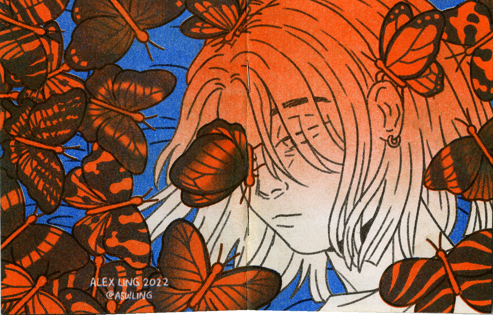

ALEX LING
Three-color risograph comic (black, blue, and orange), self-published at the SVA RisoLAB, 2022
The Weight of Your Arm... is a 10-page mini-comic about looking for yourself in someone else.
